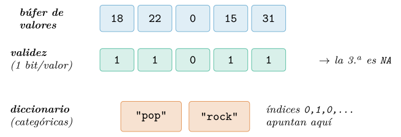
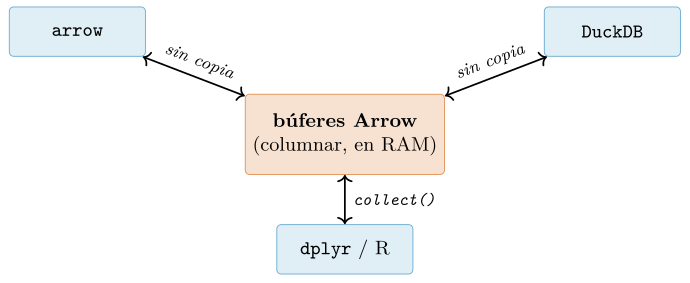
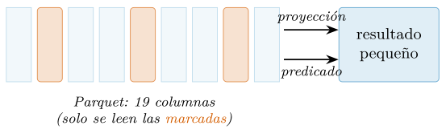
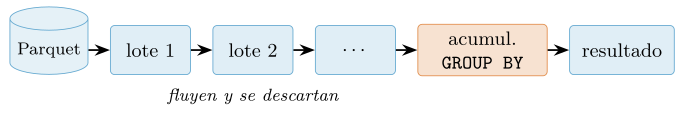
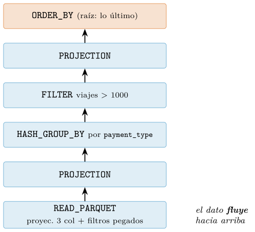
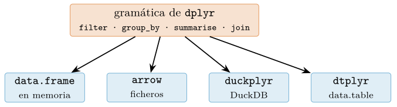
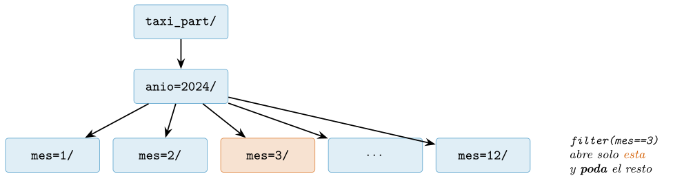
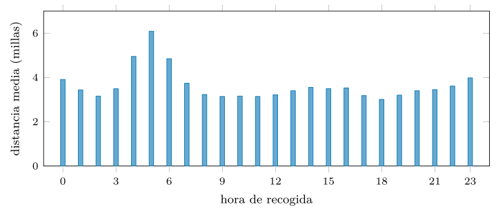
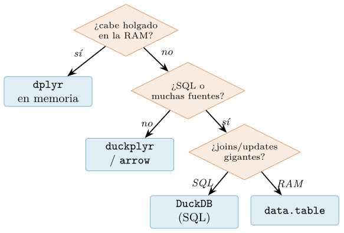

Capítulo 9. Datos a gran escala: arrow, DuckDB y duckplyr
▶ Ejecutar este capítulo en Binder
La primera vez que se abre, Binder construye el entorno en la nube (unos 10-20 min); verás una pantalla de progreso. Después queda en caché y abre en segundos. Si parece que no responde, espera a que termine de construirse o vuelve a intentarlo.
El capítulo anterior enseñó una gramática para manipular tablas. Funcionaba porque la tabla cabía en memoria: dplyr carga el data frame entero y opera sobre él. Pero la ciencia de datos tropieza tarde o temprano con tablas que no caben —o que caben con calzador, dejando la máquina de rodillas—, y entonces la pregunta cambia. Ya no es «¿qué verbo aplico?», sino «¿dónde viven los datos mientras los proceso?». Este capítulo responde esa pregunta sin abandonar la gramática que ya sabemos: los mismos verbos, pero con un motor distinto debajo que nunca llega a cargar la tabla completa.
El dato de trabajo cambia de escala. Junto al catálogo musical —113 999 pistas que caben holgadas en la RAM— traemos un conjunto que no: los viajes en taxi amarillo de Nueva York de 2024, doce ficheros Parquet, 756 MB en disco y 41 169 720 filas (New York City Taxi and Limousine Commission 2024). Materializado como tabla de double ocuparía unos 6,3 GB; multiplíquese por los años que quiera y se sale de cualquier portátil. Ese es el régimen del capítulo, y en él tres piezas del ecosistema de R se reparten el trabajo. arrow lleva el formato columnar del cap. 5 del disco al procesador y consulta ficheros sin cargarlos. DuckDB es una base de datos analítica incrustada —un motor SQL dentro del proceso de R— capaz de recorrer esos Parquet en flujo. Y duckplyr es la bisagra: dplyr con el motor de DuckDB debajo, ejecución perezosa, explain() del plan y recaída al dplyr de siempre donde DuckDB no llega.
El hilo conductor —la idea que conviene tener presente desde la primera página— es que ninguna de estas herramientas te pide reaprender a analizar datos. Lo que aprendiste en el capítulo anterior —los cinco verbos, la tubería, dividir-aplicar- combinar— sigue siendo exactamente el mismo idioma. Lo que cambia es el motor que lo ejecuta y, con él, la escala a la que puedes trabajar. Es una promesa poco común en programación: subir de escala sin subir de complejidad conceptual. Por eso el capítulo no es un catálogo de tres bibliotecas nuevas, sino una sola idea vista desde tres ángulos —la ejecución perezosa sobre un formato columnar común— y el criterio para saber cuándo hace falta.
El recorrido: primero el sustrato común —por qué columnar y qué es Arrow, con el puente que deja viajar una tabla entre bibliotecas sin copiarla (§9.1)—; después arrow para consultar ficheros en disco (§9.2), DuckDB y su SQL analítico sobre Parquet (§9.3), y duckplyr con su modelo perezoso y su plan a la vista (§9.4). Veremos cómo la misma gramática se traduce a otros motores (§9.5), cómo particionar y podar (§9.6), una medición a escala real con los taxis (§9.8) y un criterio honesto para elegir herramienta (§9.9), antes de un integrador de principio a fin. Nota de versiones: esta edición se ha verificado con arrow 25.0.0, duckdb 1.5.4 y duckplyr 1.2.1 sobre R 4.6.1.
Del vector a la columna: Arrow, el sustrato común
Las tres herramientas del capítulo —arrow, DuckDB y el dplyr moderno— descansan sobre una misma pieza, y conocerla explica de golpe por qué son rápidas y por qué se entienden entre sí. La sección retoma la idea columnar del cap. 5 y la lleva un paso más allá, del disco al procesador (§9.1.1); presenta el formato Arrow (§9.1.2); y demuestra, reloj en mano, que dos motores pueden trabajar sobre los mismos bytes sin duplicarlos (§9.1.3).
Por qué columnar
El cap. 5 dio dos razones para guardar los datos por columnas en disco: que una consulta se lleva del fichero únicamente los campos que menciona, y que apilar valores del mismo tipo se comprime mucho mejor. Aquello era un argumento de entrada/salida; existe otro, igual de decisivo, del lado del procesador. Al estar los valores de una columna pegados en memoria, recorrerlos va al compás de la caché: cada línea de 64 bytes que asciende llega repleta de datos útiles —una fila de float32 consecutivos—, la circuitería adivina cuál pedir después, y las instrucciones que tratan muchos valores de una tacada —las que ya movían la vectorización del cap. 7— trabajan en bloque. Guardado por filas, en cambio, entre un valor de la columna y el siguiente se interponen todos los demás campos del registro, y la caché acarrea un montón de bytes que la consulta ni mirará.
El efecto es concreto y grande. Imagine promediar la tarifa de 41 millones de viajes, donde cada fila tiene diecinueve campos. En disposición por columnas, las tarifas —ocho bytes cada una— están una detrás de otra: cada línea de caché de 64 bytes trae ocho tarifas listas para sumar, y el prebúsqueda del procesador va cargando las siguientes mientras suma las actuales. En disposición por filas, cada tarifa está separada de la siguiente por los otros dieciocho campos del viaje —más de cien bytes—, así que cada línea de caché trae una tarifa útil y noventa y tantos bytes de lastre. La misma suma toca diez o veinte veces más memoria, y la memoria, no la aritmética, es el cuello de botella de la analítica moderna. Por eso el formato no es un detalle de almacenamiento: es lo que decide si el procesador trabaja o espera.
A esta conclusión llegaron primero las bases de datos. El proyecto MonetDB/X100 demostró que evaluar una consulta registro a registro, al modo clásico, deja el procesador de brazos cruzados, y propuso procesar cada operador por lotes de valores del tamaño justo para la caché (Boncz et al. 2005); de esa línea salió el modelo columnar analítico que recoge (Abadi et al. 2013), del que arrow y DuckDB descienden en línea directa. Conviene la vieja distinción entre dos regímenes de carga (Kleppmann 2017). Los sistemas transaccionales manosean muchas veces por segundo unas pocas filas completas —registrar un viaje, rectificar un cobro— y con ellos casa la disposición por filas; los analíticos barren millones de filas mirando apenas un par de columnas para resumirlas, y piden la columnar. El análisis de datos habita casi siempre el segundo régimen, y por eso el capítulo entero se mueve en columnas.
El formato Arrow
Apache Arrow no es una biblioteca, sino un acuerdo: una especificación —columnar y neutral respecto al lenguaje— de cómo colocar una tabla en memoria, con implementaciones para C++, Rust, Java o R, y proyecto insignia de la Fundación Apache desde 2016 (Apache Software Foundation 2026a). En el cap. 5 lo describimos como el gemelo en memoria de Parquet, y entre los dos se reparten un mismo oficio en dos tiempos: Parquet aprieta y empaqueta en bloques aquello que ha de perdurar almacenado (Apache Software Foundation 2026b), mientras Arrow guarda esos valores ya desempaquetados, seguidos y alineados para que el procesador los ataque sin más trámite. Ir de uno al otro es, ni más ni menos, (de)serializar. Cada columna se representa con una sencillez buscada (figura 9.1): un búfer corrido con los valores, un mapa de bits en paralelo que señala cuáles valen —un bit por celda, uno si hay dato, cero si falta— y, cuando la columna es categórica, un diccionario que anota cada categoría una única vez y deja la columna reducida a índices enteros. Es la misma idea del factor del cap. 2, ahora como formato de intercambio.

Abramos con arrow la tabla de música pidiendo que no se convierta en un data frame de R: se queda como una Table de Arrow, es decir, como esos búferes columnares en memoria, sin pasar por el modelo de datos de R.
library(arrow)
tab <- read_parquet("data/processed/musica.parquet", as_data_frame = FALSE)
class(tab) # "Table" (arrow, no un data.frame)
tab$num_rows # 113999
col <- tab$popularity
class(col) # "ChunkedArray" -- una columna Arrow
col$type$ToString() # "int64"La columna es un ChunkedArray: uno o varios búferes contiguos del tipo declarado (int64), no un vector de R. Que sea chunked —por trozos— importa: una Table de Arrow puede estar formada por varios RecordBatch, lotes de filas que se procesan de uno en uno, y esa es la unidad con la que fluye el dato cuando no cabe entero. El objeto guarda su schema —el catálogo de nombres y tipos— por separado de los valores, de modo que se puede consultar la forma de la tabla sin tocar los datos:
tab$schema$names[1:5] # "track_id" "artists" "album_name" ...
tab$num_columns # 20Todavía no hemos copiado nada al modelo de datos de R; los bytes son los de Arrow. Y como Parquet es la versión en disco de esa misma disposición, elegir su compresión es un compromiso entre tamaño y velocidad. El mismo catálogo, escrito con tres códecs distintos, ilustra el abanico:
for (cod in c("uncompressed", "snappy", "zstd"))
write_parquet(df, paste0("m_", cod, ".parquet"), compression = cod)
# uncompressed 10.6 MB -- sin comprimir, lectura maxima
# snappy 8.6 MB -- rapido de (des)comprimir, el defecto
# zstd 7.1 MB -- mas pequeno, algo mas de CPUsnappy —el códec por defecto— prioriza la velocidad de descompresión; zstd aprieta un tercio más a cambio de algo de CPU. En un dataset que se lee mil veces y se escribe una, zstd suele ganar; en uno que se reescribe constantemente, snappy. Ese detalle es la clave de lo que viene: el formato en disco y el formato en memoria son primos, y el motor pasa de uno a otro sin fricción.
Puentes: los mismos bytes, sin copia
Que arrow, DuckDB y dplyr compartan el formato Arrow tiene una consecuencia práctica enorme: una tabla puede pasar de una biblioteca a otra sin copiarse. Los búferes ya están en la disposición que las tres entienden; basta con pasar el puntero. Registremos la Table de arrow dentro de DuckDB y consultémosla con SQL, sin que los datos abandonen su sitio (figura 9.2):
library(DBI); library(duckdb)
con <- dbConnect(duckdb())
duckdb_register_arrow(con, "m", tab) # registra la Table SIN copiarla
dbGetQuery(con, "SELECT count(*) n, round(avg(popularity),2) p FROM m")
#> n p
#> 1 113999 33.24
dbDisconnect(con, shutdown = TRUE)DuckDB ha recorrido 113 999 filas y calculado la media de popularidad (33,24) leyendo directamente los búferes de Arrow que creó arrow. No hubo serialización ni una segunda copia en memoria: el mismo dato, dos motores. Ese puente —zero-copy, cero copias— es lo que permite encadenar herramientas sin pagar el peaje de convertir entre formatos en cada frontera, el peaje que dominaba los flujos de datos antes de que existiera un formato común. Para hacerse una idea de lo que esto ahorra, piénsese en cómo era antes: cada biblioteca tenía su propia representación en memoria, así que pasar una tabla de una a otra significaba recorrerla entera, campo por campo, construyendo una copia en el formato de destino —tiempo y memoria proporcionales al tamaño del dato, pagados en cada frontera entre herramientas—. Con un formato común, esa frontera desaparece: los mismos bytes valen para todas. Es una de esas mejoras de infraestructura que no se ven pero que lo cambian todo, como que dos países adopten el mismo ancho de vía y los trenes dejen de tener que descargar y recargar en la frontera. Arrow es ese ancho de vía común, y buena parte de la interoperabilidad del ecosistema moderno de datos descansa sobre él.

collect()— al data frame de R. Pasar una tabla de un motor a otro es pasar un puntero, no duplicar gigabytes. El formato común es lo que convierte a estas herramientas en piezas encajables en lugar de islas.arrow: consultar ficheros sin cargarlos
El salto de escala llega con open_dataset(). En vez de leer un fichero a memoria, abre una vista sobre uno o muchos Parquet: lee los metadatos —esquema y número de filas— y no toca los datos hasta que una consulta los pide. Apuntémoslo a los doce ficheros mensuales de taxis:
ficheros <- list.files("data/nyc_taxi", pattern = "yellow.*parquet$",
full.names = TRUE)
ds <- open_dataset(ficheros) # instantaneo: solo metadatos
nrow(ds) # 41169720
ncol(ds) # 19Abrir el dataset de 41 millones de filas cuesta 0,02 segundos, porque no ha leído ni una fila: el recuento sale de los metadatos del Parquet. El objeto ds no es una tabla, es la promesa de una. Sobre él se escriben los mismos verbos de dplyr del capítulo anterior, pero no se ejecutan: se acumulan en un plan. La ejecución solo ocurre al llamar a collect(), que trae a R el resultado —pequeño— en lugar del dato —enorme—.
library(dplyr)
ds |>
filter(trip_distance > 0, fare_amount > 0) |>
summarise(n = n(), tarifa = mean(fare_amount), .by = payment_type) |>
arrange(desc(n)) |>
collect()
#> payment_type n tarifa
#> 1 1 30188290 19.73
#> 2 2 5282508 19.61
#> 3 0 3693817 20.53
#> 4 4 385877 22.28
#> 5 3 156160 21.89Treinta millones de viajes se pagaron con tarjeta (tipo 1) y cinco millones en efectivo (tipo 2), con tarifas medias casi idénticas. La consulta ha recorrido los doce ficheros, pero a R solo han llegado cinco filas. Nunca hubo 41 millones de filas en la RAM. Conviene detenerse en lo que no ha pasado: no ha habido un read_parquet() que trajera la tabla, ni un objeto de gigabytes en el entorno, ni un momento en que la máquina se quedara sin memoria. La tubería se parece exactamente a la del cap. 8 —los mismos verbos, el mismo |>—, pero su ejecución ocurre en otro sitio. Esa es la abstracción que hace posible todo lo demás: el código dice qué se quiere, y dónde se calcula queda para el motor. Aprender a confiar en esa separación —a no llamar a collect() por la ansiedad de «ver» el dato— es el primer hábito de trabajar a escala.
Proyección y predicado: empujar el trabajo al fichero
La razón de que esto sea viable —y rápido— es que arrow empuja el trabajo hacia el escaneo del Parquet, en lugar de leerlo todo y filtrar después. Dos empujones (figura 9.3). El de proyección: si la consulta solo nombra tres columnas, solo se leen del disco esas tres —el resto ni se toca, que para eso el formato es columnar—. Y el de predicado: el filter() viaja hasta el lector, que descarta bloques enteros mirando las estadísticas de cada grupo de filas sin descomprimirlos. Medámoslo leyendo dos columnas de las diecinueve:
system.time(ds |> select(trip_distance, fare_amount) |> collect())
#> usuario sistema transcurrido
#> ... ... 0.13Traer dos columnas de 41 millones de filas cuesta una fracción de segundo, no porque la máquina sea prodigiosa, sino porque las otras diecisiete columnas nunca se leyeron. Si esa misma tabla se hubiera cargado entera —collect() sin select()— habrían sido los 6 GB completos. El select() y el filter() colocados temprano en la tubería no son solo estilo: son la diferencia entre leer megabytes y leer gigabytes.

select() y filter() pronto en la tubería activa ambos empujones.Cuando los ficheros no encajan: unificar el esquema
Un dataset de muchos ficheros supone que todos comparten esquema. La realidad —sobre todo con datos que llegan mes a mes de una fuente pública— es más áspera: un mes guardó una columna como string y otro como large_string, o un tipo entero cambió de anchura entre versiones. Al abrirlos juntos, arrow se planta:
open_dataset(carpeta_mezclada)
#> Error: Type error: Unable to merge: Field store_and_fwd_flag has
#> incompatible types: large_string vs stringNo es un fallo caprichoso: arrow avisa de que no puede tratar como una sola tabla lo que tiene columnas de tipos distintos. Hay dos salidas. La primera, declarar un esquema común y pedirle a arrow que amolde cada fichero a él con unify_schemas o pasando un schema explícito. La segunda, más robusta cuando el origen es un desastre, reescribir los ficheros con write_dataset() imponiendo un esquema uniforme, y consultar a partir de esa copia limpia. Es la lección del cap. 5 a otra escala: el formato promete tipos, pero solo la disciplina de escritura los garantiza. A gran escala, donde nadie inspecciona los ficheros uno a uno, un tipo que baila entre meses puede tumbar un flujo entero, y conviene detectarlo al abrir, no al agregar.
Procesar por lotes lo que no cabe entero
collect() trae el resultado a R, pero a veces el resultado es el dato transformado, y sigue siendo enorme. Para esos casos arrow ofrece recorrer el dataset por lotes —los RecordBatch— aplicando a cada uno una función, sin materializar la tabla completa. map_batches() entrega cada lote como un data frame pequeño; el patrón permite, por ejemplo, acumular un resultado o escribir por partes:
# recorrer en lotes contando filas sin cargar la tabla entera
total <- 0L
ds |> select(fare_amount) |>
map_batches(function(lote) { total <<- total + nrow(lote); lote })Es la misma idea del flujo que veremos en DuckDB, pero controlada desde R: el dato pasa por la función lote a lote y se descarta. Rara vez hace falta bajar a este nivel —los verbos perezosos cubren casi todo—, pero cuando la transformación no es expresable en la gramática y el dato no cabe, procesar por lotes es la única salida que no revienta la memoria.
DuckDB: SQL analítico directamente sobre Parquet
arrow consulta ficheros con la gramática de dplyr. DuckDB hace lo mismo con el otro gran lenguaje de datos: SQL. Es una base de datos analítica incrustada —corre dentro del proceso de R, sin servidor que instalar ni puerto que abrir, como SQLite pero orientada a columnas y a consultas analíticas (Raasveldt y Mühleisen 2019; DuckDB Foundation 2026)—. Esa palabra, incrustada, marca la diferencia con la imagen tradicional de una base de datos. No hay un proceso servidor al que conectarse por red, ni credenciales, ni administrador: DuckDB es una biblioteca que se carga en el mismo R, comparte su memoria y desaparece al cerrar la sesión —o persiste en un fichero, si se le pide—. Para el trabajo analítico de una persona o un equipo pequeño, esa simplicidad es una ventaja enorme: toda la potencia de un motor SQL columnar sin ninguna de las cargas de operar una base de datos de verdad. Su gracia para nosotros: sabe leer Parquet como si fueran tablas, sin importarlos primero. La función read_parquet() dentro del SQL abre el fichero al vuelo.
library(DBI); library(duckdb)
con <- dbConnect(duckdb())
glob <- "data/nyc_taxi/yellow_tripdata_2024-*.parquet"
dbGetQuery(con, sprintf("SELECT count(*) AS n FROM read_parquet('%s')", glob))
#> n
#> 1 41169720El recuento de 41 millones de filas es instantáneo: DuckDB lo lee de los metadatos, igual que arrow. Ahora una agregación de verdad —viajes, distancia y tarifa medias por mes— escrita en SQL analítico, con GROUP BY y date_trunc sobre la marca de tiempo:
q <- sprintf("
SELECT date_trunc('month', tpep_pickup_datetime) AS mes,
count(*) AS viajes,
round(avg(trip_distance), 3) AS dist,
round(avg(fare_amount), 2) AS tarifa
FROM read_parquet('%s')
WHERE trip_distance > 0 AND fare_amount > 0
AND tpep_pickup_datetime >= '2024-01-01'
AND tpep_pickup_datetime < '2025-01-01'
GROUP BY mes ORDER BY mes", glob)
dbGetQuery(con, q) |> head(4)
#> mes viajes dist tarifa
#> 1 2024-01-01 2869707 3.733 18.50
#> 2 2024-02-01 2901481 3.960 18.42
#> 3 2024-03-01 3440048 4.623 19.16
#> 4 2024-04-01 3414215 5.241 19.46Toda la consulta —recorrer 41 millones de filas, filtrar, agrupar por mes y promediar— tarda en torno a un cuarto de segundo, y R nunca ve más que las doce filas del resultado. El WHERE sobre la fecha, de paso, hace de filtro de calidad: el conjunto trae unas pocas decenas de viajes con marcas de tiempo imposibles —2002, 2009, 2025—, ruido que a esta escala conviene acotar antes de promediar.
Una lección escondida en los datos
SQL invita a preguntar, y preguntar a datos reales casi siempre descubre algo. Agrupemos por tipo de pago y miremos la propina media:
dbGetQuery(con, sprintf("
SELECT payment_type, count(*) AS n, round(avg(tip_amount),3) AS propina
FROM read_parquet('%s') GROUP BY payment_type ORDER BY n DESC", glob))
#> payment_type n propina
#> 1 1 30452159 4.368
#> 2 2 5540088 0.003
#> 3 0 4091232 0.758
#> 4 4 794494 0.050
#> 5 3 291743 0.023
#> 6 5 4 ... <- residual: 4 viajes con codigo 5Los viajes con tarjeta (tipo 1) promedian 4,37 dólares de propina; los de efectivo (tipo 2), tres milésimas. ¿Los neoyorquinos no dejan propina en efectivo? No: es que la propina en efectivo no se registra —el taxímetro solo anota lo que pasa por la tarjeta—. Un análisis ingenuo de «propina media por tipo de pago» concluiría una falsedad rotunda. Es el recordatorio del cap. 8, a otra escala: un cero puede significar «cero» o «no observado», y solo el contexto —no el dato— distingue. La escala amplifica la trampa, porque a 41 millones de filas nadie mira los casos uno a uno.
Y el ruido no acaba en los ceros. Agrupar por mes sin filtrar la fecha destapa la basura que todo conjunto grande arrastra:
dbGetQuery(con, sprintf(
"SELECT date_trunc('month', tpep_pickup_datetime) AS mes,
count(*) AS n FROM read_parquet('%s') GROUP BY mes ORDER BY n LIMIT 5", glob))
#> mes n
#> 1 2025-02-01 1 -- un viaje "de 2025" en datos de 2024
#> 2 2026-06-01 2 -- y hasta de 2026
#> 3 2025-01-01 2
#> 4 2008-12-01 10 -- marcas de 2008...
#> 5 2023-12-01 10Unas decenas de viajes con marcas de tiempo imposibles —de 2008, de 2025, de 2026— sobre 41 millones. Diluidos, no distorsionan una media; pero un GROUP BY por mes los convierte en categorías espurias que ensucian cualquier tabla o gráfico. A gran escala la limpieza no es opcional ni se hace «a ojo»: se codifica como un filtro explícito de plausibilidad —fechas dentro del rango, importes positivos, distancias razonables— que se aplica antes de agregar, en el motor. Nadie va a revisar 41 millones de filas; el filtro es la única inspección que escala.
El motor en flujo
¿Cómo agrega DuckDB 41 millones de filas sin cargarlas? En flujo (streaming, figura 9.4): lee el Parquet por lotes de unos miles de filas, pasa cada lote por los operadores —filtrar, actualizar los acumuladores del GROUP BY— y lo descarta antes de leer el siguiente. En memoria solo conviven un lote y la tabla de agregación, no el dato entero. Por eso una consulta que resume escala a datos mayores que la RAM aunque el resultado —o el estado intermedio— quepa de sobra. Se le puede incluso poner techo de memoria y decirle cuántos núcleos usar:
dbExecute(con, "SET memory_limit = '2GB'")
dbExecute(con, "SET threads = 4")
# la misma agregacion corre dentro de 2 GB, en paralelo sobre 4 nucleosPoner techo de memoria no ralentiza una agregación —su estado ya era minúsculo— pero es la red de seguridad para las operaciones que sí lo necesitan: si un join o un ORDER BY amenazan con desbordar los 2 GB, DuckDB vuelca la parte que no cabe a ficheros temporales en disco y sigue, más despacio pero sin morir. Es la diferencia entre un proceso que se ralentiza y uno que se mata con un error de memoria. Y el número de hilos importa a esta escala porque el motor paraleliza el escaneo y la agregación por defecto: los lotes de distintos grupos de filas se procesan a la vez en varios núcleos, y solo al final se combinan los acumuladores parciales. Ese paralelismo gratuito —no hay que escribir código concurrente, el motor lo hace— es buena parte de por qué DuckDB supera al «cargar y calcular» de un solo hilo que veíamos con dplyr en memoria.

GROUP BY. En memoria nunca está el dato entero, así que una agregación escala a tablas mayores que la RAM. Un JOIN o un ORDER BY sobre toda la tabla necesitan más estado y vuelcan a disco si no caben, pero el principio es el mismo: procesar sin materializar.El vocabulario analítico: ventanas, uniones y CTE
SQL no es solo SELECT y GROUP BY. Su repertorio analítico —el que justifica usarlo a esta escala— incluye las funciones de ventana (window functions), que calculan sobre un grupo sin colapsarlo, igual que el mutate agrupado del cap. 8 pero en el motor. La pregunta «¿a qué hora pica más cada forma de pago?» se responde rankeando dentro de cada payment_type con row_number() OVER (PARTITION BY …):
dbGetQuery(con, sprintf("
SELECT payment_type, hora, viajes FROM (
SELECT payment_type, extract(hour FROM tpep_pickup_datetime) AS hora,
count(*) AS viajes,
row_number() OVER (PARTITION BY payment_type
ORDER BY count(*) DESC) AS rk
FROM read_parquet('%s') GROUP BY payment_type, hora)
WHERE rk = 1 ORDER BY viajes DESC LIMIT 3", glob))
#> payment_type hora viajes
#> 1 1 18 2219848 -- la tarjeta pica a las 18 h
#> 2 2 14 397653 -- el efectivo, a las 14 h
#> 3 0 18 303387Los pagos con tarjeta se concentran a las seis de la tarde, la hora punta del regreso a casa. Y las expresiones de tabla comunes (CTE, la cláusula WITH) encadenan consultas legibles sin anidarlas, como una tubería de dplyr escrita en SQL. Con ellas y las uniones —JOIN entre dos Parquet, o entre un Parquet y una tabla de R— el motor cubre todo el vocabulario tabular del capítulo anterior, ahora sobre datos que no caben.
DuckDB habla con todos
La lectura directa no se limita a Parquet. read_csv_auto() abre un CSV —infiriendo tipos, en flujo, sin cargarlo— y read_json_auto() un JSON; la misma consulta puede cruzar un Parquet con un CSV en un JOIN, que es justo lo que un almacén de datos hace. Es el heredero natural del lector por trozos del cap. 5: allí, read_csv_chunked() recorría un CSV grande por lotes para no cargarlo; aquí, DuckDB hace lo mismo pero además consulta directamente, sin pasar por R. Sobre un CSV de casi un millón de filas, la diferencia se nota:
# 17 MB, ~912 000 filas
system.time(readr::read_csv("grande.csv")) # ~0.20 s a RAM
system.time(dbGetQuery(con,
"SELECT avg(popularity) FROM read_csv_auto('grande.csv')"))
#> ~0.09 s -- la mitad, y sin materializar el CSV en RDuckDB tarda la mitad y, sobre todo, nunca trae el CSV a memoria: agrega en flujo y devuelve el número. Con Parquet la ventaja sería aún mayor, pero incluso sobre el formato menos favorable —texto sin comprimir ni tipar— el motor gana. Más útil todavía en un flujo de R: se puede registrar un data frame de R como si fuera una tabla del motor con duckdb_register(), y unirlo con el fichero gigante. Aquí, una minitabla de R que pone nombre a los códigos de pago, unida a los 41 millones de viajes:
etiquetas <- data.frame(
payment_type = 0:5,
nombre = c("sin codigo", "tarjeta", "efectivo",
"gratis", "disputa", "desconocida"))
duckdb_register(con, "et", etiquetas)
dbGetQuery(con, sprintf("
SELECT e.nombre, count(*) AS n
FROM read_parquet('%s') t JOIN et e ON t.payment_type = e.payment_type
GROUP BY e.nombre ORDER BY n DESC LIMIT 3", glob))
#> nombre n
#> 1 tarjeta 30452159
#> 2 efectivo 5540088
#> 3 desconocido 4091232El dato grande se queda en disco; la dimensión pequeña vive en R; el JOIN ocurre en el motor. Es el patrón hecho-dimensión del cap. 8 a escala: una tabla de hechos enorme, muchas tablas de dimensión diminutas que la etiquetan.
Y cuando el análisis merece persistir —no recalcular cada sesión—, DuckDB puede ser un fichero de base de datos en disco, no solo memoria efímera:
con2 <- dbConnect(duckdb(dbdir = "analisis.duckdb")) # persiste en disco
dbExecute(con2, sprintf("CREATE TABLE resumen AS
SELECT payment_type, count(*) n
FROM read_parquet('%s') GROUP BY payment_type", glob))
# 'resumen' queda guardada; en otra sesion se reabre y se consulta al instante
dbExecute(con2, "COPY resumen TO 'resumen.parquet' (FORMAT parquet)")CREATE TABLE AS materializa un resultado dentro del fichero para reusarlo; COPY …TO exporta cualquier consulta a Parquet o CSV. Con eso, DuckDB deja de ser solo un motor de consulta y se vuelve el pegamento de un flujo: lee muchos formatos, cruza fuentes, calcula en flujo y escribe el resultado donde el siguiente paso lo espera.
duckplyr: la gramática de dplyr con el motor de DuckDB
Tenemos dos caminos: la gramática de dplyr sobre arrow, y SQL sobre DuckDB. duckplyr los funde: escribe dplyr —los verbos exactos del cap. 8— y por debajo ejecuta el motor de DuckDB, con su optimizador y su flujo (duckplyr authors 2025). No hay que aprender SQL ni cambiar de sintaxis; se cambia el motor, no el idioma. La entrada perezosa a un Parquet es read_parquet_duckdb():
library(duckplyr)
tv <- read_parquet_duckdb(glob)
class(tv) # "prudent_duckplyr_df" "duckplyr_df" "tbl_df" "tbl" "data.frame"
consulta <- tv |>
filter(trip_distance > 0, fare_amount > 0) |>
summarise(viajes = n(), dist = mean(trip_distance),
tarifa = mean(fare_amount), .by = payment_type) |>
filter(viajes > 1000) |>
arrange(desc(viajes))
collect(consulta) # aqui, y solo aqui, se ejecuta
#> payment_type viajes dist tarifa
#> 1 1 30188290 3.567 19.73
#> 2 2 5282508 3.410 19.61
#> ...Es dplyr palabra por palabra, pero tv no es un data frame cargado: es un prudent_duckplyr_df, una promesa perezosa con el motor de DuckDB detrás. La tubería no ejecuta nada; construye un plan que solo se dispara con collect(). La agregación completa sobre los 41 millones de filas tarda una décima de segundo, como el SQL de la sección anterior —es el mismo motor—.
El optimizador a la vista
Como el plan es un objeto y no una acción ya consumida, se puede inspeccionar antes de ejecutarlo. explain() imprime el árbol de operadores que DuckDB ejecutará, de la raíz —lo último— a las hojas —el escaneo del Parquet—:
explain(consulta)
#> ORDER_BY (viajes DESC)
#> PROJECTION (payment_type, viajes, dist, tarifa)
#> FILTER (viajes > 1000)
#> HASH_GROUP_BY (Groups: payment_type; count, sum, avg, ...)
#> PROJECTION (payment_type, trip_distance, fare_amount)
#> READ_PARQUET
#> Projections: trip_distance, fare_amount, payment_type
#> Filters: trip_distance>0.0 fare_amount>0.0Leído de abajo arriba, el plan cuenta la historia completa (figura 9.5). El READ_PARQUET de la hoja ya trae dos anotaciones reveladoras: Projections, que lista solo las tres columnas necesarias —el empujón de proyección—, y Filters, con los dos predicados trip_distance>0 y fare_amount>0 pegados al escaneo —el empujón de predicado—. El optimizador ha bajado el trabajo hasta el fichero por su cuenta, sin que se lo pidiéramos: nuestra tubería declaraba qué queríamos, y el motor decidió cómo. Ese es el pago de la ejecución perezosa: separar la intención de la ejecución deja un hueco para que una máquina más lista que nosotros reordene el trabajo.

explain(), de la hoja (escaneo) a la raíz (orden final). El optimizador ha empujado la proyección de tres columnas y los dos filtros hasta el READ_PARQUET, de modo que el dato entra ya adelgazado y el resto de operadores trabaja sobre poco. La tubería dijo qué; el motor decidió cómo.Prudencia: cuándo recae en dplyr
DuckDB no sabe traducir cualquier función de R. ¿Qué pasa cuando la tubería usa una que el motor no reconoce —una función propia, digamos—? duckplyr recae: hace en el dplyr de siempre lo que DuckDB no puede. Pero recaer obliga a materializar el dato en R, y si el dato es mayor que la RAM eso es justo lo que veníamos evitando. De ahí el concepto de prudencia (prudence), que gobierna cuánto se permite duckplyr materializar. Un frame perezoso sobre disco —el de read_parquet_duckdb()— nace tacaño (stingy): antes que cargar en secreto gigabytes en memoria, prefiere avisar y detenerse.
rara <- function(x) x^2 - sqrt(abs(x)) + 1 # DuckDB no la conoce
tv |> mutate(z = rara(popularity)) |> collect()
#> Error: This operation cannot be carried out by DuckDB, and the input
#> is a stingy duckplyr frame.
#> Use `compute(prudence = "lavish")` to materialize and continue.El error no es un fallo: es una salvaguarda. duckplyr se niega a materializar a escondidas un dato que podría no caber, y deja la decisión en manos de quien sabe cuánto pesa. Si el dato cabe, se le da permiso explícito con compute(prudence = "lavish") —«pródigo», materializa sin reparos— y la tubería continúa recayendo en dplyr. En cambio, un frame que nace en memoria —convertido con as_duckdb_tibble() desde un data frame que ya está en la RAM— recae solo, sin drama, porque materializar no cuesta nada nuevo:
dk <- as_duckdb_tibble(as_tibble(read_parquet("data/processed/musica.parquet")))
dk |> mutate(z = rara(popularity)) |> summarise(m = mean(z)) |> collect()
#> m
#> 1 1598.2 # recae en dplyr sin error: el dato ya estaba en memoriaLa distinción es toda la filosofía de duckplyr en una palabra: es prudente. Acelera lo que DuckDB sabe hacer, recae con elegancia en lo que no, y nunca gasta memoria a tus espaldas cuando el dato es grande. Escribes dplyr; pagas velocidad de base de datos; conservas la red de seguridad del lenguaje completo.
Uniones, materialización parcial y modo transparente
La gramática entera funciona, no solo los agregados. Un left_join del frame gigante con una dimensión pequeña —el patrón hecho-dimensión, ahora en duckplyr— se escribe exactamente como en el cap. 8, y se ejecuta en el motor:
etiquetas <- tibble(payment_type = 0:5,
nombre = c("sin codigo", "tarjeta", "efectivo",
"gratis", "disputa", "desconocida"))
tv |>
filter(fare_amount > 0) |>
left_join(etiquetas, by = "payment_type") |>
summarise(n = n(), tarifa = round(mean(fare_amount), 2), .by = nombre) |>
arrange(desc(n)) |> collect()
#> nombre n tarifa
#> 1 tarjeta 30450812 19.91
#> 2 efectivo 5388440 19.62
#> 3 desconocido 3960154 20.54
#> ... nula 1 62.00 -- un unico viaje con codigo 5Dos matices útiles. compute() —frente a collect()— materializa el resultado dentro de DuckDB, sin traerlo a R: sirve para fijar un paso intermedio caro y reutilizarlo en varias consultas sin recalcularlo, todo sin salir del motor. Y para quien quiera la aceleración sin tocar su código, duckplyr ofrece un modo transparente: methods_overwrite() hace que los verbos de dplyr sobre cualquier data frame pasen por DuckDB cuando es posible, y methods_restore() lo deshace. El mismo análisis del cap. 8, sin cambiar una línea, corre con motor de base de datos:
methods_overwrite() # dplyr -> DuckDB de forma global
df |> filter(popularity > 90) |> summarise(n = n(), e = round(mean(energy), 3))
#> # A tibble: 1 x 2
#> n e
#> <int> <dbl>
#> 1 68 0.673
methods_restore() # volver al dplyr normalEs la promesa llevada al extremo: no ya «la misma gramática, otro motor», sino «el mismo código, otro motor». Para el catálogo, que cabe, no cambia nada perceptible; para un flujo que empieza a rozar la RAM, es un interruptor que acelera sin reescribir.
Una gramática, cuatro motores
Merece la pena detenerse en lo que ha pasado. Hemos escrito el mismo dplyr contra cuatro motores distintos (figura 9.6): el data.frame en memoria del cap. 8, el motor de arrow sobre ficheros, el de DuckDB vía duckplyr, y —del cap. 8— data.table vía dtplyr. La gramática es la interfaz; el motor, la implementación. Elegir motor es una decisión de rendimiento y escala, no de sintaxis: el código que ya sabes escribir corre en los cuatro.

dplyr se ejecutan sobre un data frame en memoria, sobre ficheros con arrow, sobre DuckDB con duckplyr o sobre data.table con dtplyr. Cambiar de motor no cambia el código que se escribe: cambia dónde viven los datos y cómo se procesan. La gramática es un contrato; los motores lo cumplen de formas distintas.Cuando conviene ver el SQL que se genera —para auditar, para llevárselo a otra base de datos, para entender el plan—, dbplyr lo traduce. El puente to_duckdb() enchufa un dataset de arrow a DuckDB, y show_query() (o dbplyr::sql_render()) revela la traducción:
ds |> to_duckdb() |>
filter(trip_distance > 0) |>
group_by(payment_type) |>
summarise(viajes = n(), tarifa = mean(fare_amount, na.rm = TRUE)) |>
show_query()
#> SELECT payment_type, COUNT(*) AS viajes, AVG(fare_amount) AS tarifa
#> FROM arrow_001
#> WHERE (trip_distance > 0.0)
#> GROUP BY payment_typeEse es exactamente el papel de dbplyr que anticipamos en el cap. 5: dplyr como frontend de cualquier base de datos que hable SQL —PostgreSQL, SQLite, DuckDB, un almacén en la nube—. El patrón completo, contra una base SQLite, muestra el viaje de ida y vuelta: se apunta una tabla remota con tbl(), se le aplican los verbos —que no se ejecutan en R, sino que se acumulan como SQL—, y solo collect() dispara la consulta en el servidor y trae el resultado:
library(dbplyr); con <- dbConnect(RSQLite::SQLite(), "musica.sqlite")
tbl(con, "m") |>
filter(popularity > 80) |>
group_by(track_genre) |>
summarise(n = n(), pop = mean(popularity)) |>
arrange(desc(n)) |> collect()
#> track_genre n pop
#> pop 114 86.1 -- el genero con mas exitos
#> dance 89 84.2
#> rock 80 84.1
#> ...Nada de esto recorre los datos en R: el filter, el group_by y el summarise se traducen a una sola sentencia SQL que SQLite ejecuta sobre su propio índice, y a R llegan las filas del resumen. La misma tubería contra PostgreSQL, DuckDB o un almacén en la nube generaría el dialecto de SQL de cada uno sin que cambie una línea de R. Y dtplyr, ya visto, cierra el cuarteto traduciendo la misma gramática a data.table para actualizaciones en el sitio y joins enormes en memoria. Cuatro motores, una sola cosa que aprender: esa es la economía cognitiva que hace de la gramática de dplyr algo más que una biblioteca cómoda —la convierte en una inversión que no caduca al cambiar de escala o de servidor—.
Particionar y podar
Hasta aquí hemos consultado ficheros tal como venían. Si vamos a preguntar muchas veces por rangos —«marzo», «los viajes de un trimestre»—, conviene organizar el dato para que el motor pueda saltarse de un vistazo lo que no toca. Eso es particionar: escribir el dataset en una jerarquía de carpetas cuyo nombre codifica el valor de una columna (figura 9.7). Con write_dataset() y group_by() sobre las claves de partición:
open_dataset(ficheros) |>
filter(tpep_pickup_datetime >= as.Date("2024-01-01"),
tpep_pickup_datetime < as.Date("2025-01-01"),
trip_distance > 0, fare_amount > 0) |>
mutate(anio = year(tpep_pickup_datetime),
mes = month(tpep_pickup_datetime)) |>
select(anio, mes, trip_distance, fare_amount, tip_amount, payment_type) |>
group_by(anio, mes) |>
write_dataset("data/taxi_part", format = "parquet")
# crea data/taxi_part/anio=2024/mes=1/part-0.parquet, .../mes=2/..., etc.El resultado son doce carpetas anio=2024/mes=N/, cada una con su Parquet. Al reabrir el dataset, arrow descubre las columnas anio y mes a partir de los nombres de carpeta —no estaban en los datos, estaban en la ruta— y las trata como dos columnas más. Y aquí llega la recompensa, la poda (partition pruning): un filtro sobre la clave de partición hace que el motor abra solo las carpetas relevantes y ni mire las demás.
dsp <- open_dataset("data/taxi_part")
# recorrer las 12 particiones:
dsp |> summarise(n = n(), d = mean(trip_distance)) |> collect() # ~0.12 s
# podar a una sola:
dsp |> filter(anio == 2024, mes == 3) |>
summarise(n = n(), d = mean(trip_distance)) |> collect() # ~0.04 s
#> n d
#> 1 3440048 4.623Consultar marzo cuesta un tercio que recorrer el año, y la diferencia crece con el número de particiones: sobre diez años de datos, preguntar por un mes abre una carpeta de ciento veinte en lugar de leerlas todas. La poda no es un truco de velocidad marginal; es lo que hace que un dataset de terabytes responda preguntas acotadas en tiempo interactivo.
Hay una segunda decisión, menos visible pero igual de importante: el tamaño de los ficheros dentro de cada partición. Un dataset que crece a base de añadir lotes pequeños —un fichero por cada carga diaria— acaba con miles de ficheros minúsculos, y aunque la poda descarte la partición correcta, abrir cien ficheros de un megabytes es más lento que abrir uno de cien. La cura es la compactación (compaction): reescribir periódicamente el dataset fundiendo los fragmentos en ficheros de tamaño saludable —decenas o cientos de megabytes—, algo que write_dataset() hace de una pasada al reescribir. Es tarea de mantenimiento, no de análisis, pero un lago de datos que nadie compacta se degrada solo con el tiempo, y la consulta que ayer volaba hoy arrastra. La partición decide qué carpetas se abren; la compactación, cuántos ficheros hay dentro de cada una: las dos gobiernan el rendimiento a escala, y ninguna se arregla sola.

anio=2024/mes=3/). arrow reconstruye esas columnas desde las rutas, y un filtro sobre ellas hace que solo se abran las carpetas que cumplen —la poda—. Elegir la columna de partición es elegir por qué eje se harán la mayoría de las preguntas.La nube como disco
El particionado tiene un compañero natural: el almacenamiento de objetos en la nube. Un dataset particionado de terabytes rara vez vive en el portátil; vive en un bucket de S3 o equivalente, y la gracia de estas herramientas es que lo tratan igual que un directorio local. arrow abre un bucket con s3_bucket() y se lo pasa a open_dataset() sin más:
cubo <- s3_bucket("voi-taxi-datos", region = "us-east-1")
ds <- open_dataset(cubo$path("nyc_taxi/anio=2024"))
ds |> filter(mes == 3) |> summarise(n = n()) |> collect()La poda de particiones cobra aquí todo su sentido: filtrar por mes significa que solo se descargan de la red los objetos de esa carpeta, no el dataset entero. El empujón de proyección se suma —solo viajan las columnas pedidas—, de modo que una consulta acotada sobre un lago de datos remoto transfiere megabytes, no terabytes. DuckDB hace lo propio con su extensión httpfs, que le permite leer un Parquet directamente por HTTPS o desde S3 con read_parquet(’s3://…’). El modelo mental es liberador: el disco local, el bucket en la nube y el fichero servido por HTTP son, para el motor, la misma cosa —una fuente de bytes columnares que se leen perezosos y podados—. La diferencia es solo la latencia, y contra la latencia juegan la proyección, el predicado y la poda, las tres palancas que ya conocemos.
Una medición a escala real: los taxis de Nueva York
Toca poner número al capítulo entero. La misma pregunta —viajes y tarifa media por tipo de pago sobre los 41 millones de filas— resuelta por los cuatro caminos, con el reloj en la mano. Primero, el enfoque ingenuo: cargarlo todo en R y usar dplyr normal.
# A) cargar en memoria y agregar con dplyr
todo <- open_dataset(ficheros) |>
select(payment_type, trip_distance, fare_amount) |> collect()
object.size(todo) # 823 MB -- y solo son 3 de las 19 columnas
todo |> filter(trip_distance > 0, fare_amount > 0) |>
summarise(n = n(), tarifa = mean(fare_amount), .by = payment_type)Ya asoma el problema de fondo. Tres columnas de las diecinueve ocupan 823 MB en la RAM; las diecinueve rondarían los 6 GB, y dos años de datos no cabrían en un portátil. El enfoque «cargar y calcular» no es que sea lento —no lo es tanto—: es que no escala, porque su consumo de memoria crece con el dato, no con la respuesta. Los otros tres caminos —arrow perezoso, SQL de DuckDB, duckplyr— nunca retienen más que el resultado. La tabla 9.1 recoge los tiempos de la misma consulta, con el mismo empujón de proyección (solo se leen tres columnas):
| Camino | Cómo | Tiempo | RAM en R |
|---|---|---|---|
| A. cargar todo | collect() + dplyr |
\(\approx\)0,90 s | 823 MB |
| B. arrow perezoso | open_dataset |> ``…`` |> collect() |
\(\approx\)0,33 s | solo el resultado |
| C. DuckDB SQL | read_parquet() en SELECT |
\(\approx\)0,10 s | solo el resultado |
| D. duckplyr | read_parquet_duckdb() |> ``… |
\(\approx\)0,11 s | solo el resultado |
Tres lecturas. Primera: los motores especializados (C, D) no solo evitan la RAM, además son varias veces más rápidos, porque paralelizan y empujan el trabajo al fichero. Segunda: arrow (B) queda en medio —muy por encima de cargar todo, un pelín por detrás de DuckDB en esta agregación—. Tercera, y la que importa: el tiempo de A engaña. A esta escala, que aún cabe, «cargar todo» tarda menos de un segundo y parece competitivo; pero es el único camino cuyo coste de memoria explota con el tamaño. La medición honesta no es «cuál gana por 0,8 segundos», sino «cuál sigue funcionando cuando el dato se duplica». Y ahí A se cae solo.
Una pregunta que solo la escala responde
La escala no es solo un reto de ingeniería; abre preguntas que un dato pequeño no puede contestar. ¿Cómo cambia la longitud del viaje a lo largo del día? Con 41 millones de viajes, cada hora tiene millones de observaciones y la señal emerge limpia. Una consulta agrega la distancia media por hora de recogida —descartando los viajes absurdos de más de cien millas— y devuelve veinticuatro filas:
read_parquet_duckdb(glob) |>
filter(trip_distance > 0, trip_distance < 100) |>
mutate(hora = hour(tpep_pickup_datetime)) |>
summarise(dist = mean(trip_distance), n = n(), .by = hora) |>
arrange(hora) |> collect()
#> hora 5 -> 6.09 millas (la mas larga); hora 18 -> 3.01 (la mas corta)El patrón (figura 9.8) cuenta una historia urbana nítida. Los viajes más largos salen a las cinco de la mañana —carreras al aeropuerto, cuando la ciudad aún duerme y las avenidas están libres—; los más cortos, a las seis de la tarde, en plena hora punta, cuando el tráfico convierte cada trayecto en un salto de pocas manzanas. Ninguna de las dos cosas se ve en una muestra de mil viajes: el ruido las tapa. Es el argumento último de todo el capítulo —por qué molestarse con la gran escala— dicho con un dato: hay preguntas cuya respuesta solo aparece cuando se miran todos los datos, no una parte.

El criterio: qué herramienta y cuándo
Con cuatro motores sobre la mesa, la pregunta no es «cuál es el mejor» —no lo hay— sino «cuál para esto». El árbol de la figura 9.9 resume el criterio, y la tabla 9.2 lo detalla. La primera pregunta, y la más importante, es de tamaño: ¿cabe el dato holgado en la RAM? Si sí —y el catálogo musical, con sus 8 MB, cabe mil veces—, el dplyr en memoria del cap. 8 es la respuesta correcta: es simple, es rápido de sobra y no añade una capa de motor que no necesitas. Toda la maquinaria de este capítulo es para cuando la respuesta es no.

dplyr de siempre. Si no, entra el capítulo: la gramática perezosa de duckplyr o arrow para lo habitual; SQL directo de DuckDB cuando la pregunta es naturalmente SQL o cruza muchas fuentes; data.table para joins y actualizaciones enormes en memoria. No hay motor superior: hay un motor adecuado a cada régimen.| Situación | Herramienta | Por qué |
|---|---|---|
| Cabe en RAM (\(\lesssim\) 1/3 de la RAM) | dplyr / data.frame |
Simple, rápido, sin capa extra. |
| Mayor que la RAM, cabe en disco | duckplyr o arrow |
Perezoso, en flujo; misma gramática. |
| La pregunta es SQL o cruza fuentes | DuckDB + DBI |
SQL nativo sobre Parquet, CSV, bases. |
| Joins / updates enormes en RAM | data.table (dtplyr) |
In-place, sin copias, muy afinado. |
| Base de datos remota | dbplyr |
dplyr traducido al SQL del servidor. |
Un recorrido por casos concretos afila el criterio mejor que cualquier regla. Un CSV de diez mil filas de una encuesta: cabe mil veces en la RAM, así que read_csv() y dplyr, sin más; montar un motor sería disparar a un mosquito con un cañón. Un año de logs de un servidor, unos pocos gigabytes en Parquet particionado por día: ya no cabe cómodo, pero la pregunta típica —«¿cuántos errores hubo el martes?»— es una agregación acotada, terreno de duckplyr o arrow con poda de particiones. Un cruce de dos tablas de doscientos millones de filas que sí caben en una máquina con RAM generosa, con actualizaciones en el sitio: es el terreno propio de data.table, que no copia y está afinado para joins enormes en memoria. Una consulta recurrente contra el almacén corporativo en PostgreSQL: la escribe dbplyr, que la traduce al SQL del servidor y deja que la base —optimizada durante décadas para esto— haga el trabajo, trayendo solo el resultado. Cuatro problemas, cuatro motores, una gramática: el juicio está en leer el problema, no en dominar cuatro sintaxis.
Hay una tentación que conviene nombrar para resistirla: montar DuckDB y particionar un dataset para analizar un CSV de diez mil filas. Es sobreingeniería, y cuesta —en complejidad, en dependencias, en una capa de indirección donde antes había un data frame que cabía en la cabeza—. La maquinaria de gran escala se paga sola cuando el dato la exige, y estorba cuando no. El criterio del buen ingeniero no es «usar la herramienta más potente», sino «usar la más simple que resuelva el problema de hoy y no impida el de mañana». Para el catálogo musical, ese sigue siendo el dplyr del capítulo anterior; los taxis son los que piden bajar aquí.
Cuándo bajar a SQL directo
La gramática de dplyr sobre duckplyr cubre casi todo, pero no todo, y saber dónde está el borde evita pelearse con la abstracción. Hay consultas que SQL expresa con naturalidad y la gramática, con torpeza o directamente no: marcos de ventana complejos (RANGE BETWEEN, PARTITION con marcos móviles), las CTE recursivas para recorrer jerarquías, la cláusula PIVOT, o funciones específicas del motor. Cuando la pregunta es SQL —cuando se piensa en cláusulas, no en verbos—, forzarla en la tubería es remar contra corriente: mejor escribirla en SQL, pasarla por dbGetQuery() y recoger el resultado. Y al revés: cuando el análisis encadena transformaciones y se lee mejor de izquierda a derecha, la gramática gana. No son bandos; son dos registros del mismo idioma de datos, y el buen criterio es usar cada uno donde brilla. duckplyr y dbplyr existen precisamente para no tener que elegir de antemano: se empieza con la gramática y, si una consulta pide SQL, show_query() da el punto de partida para escribirla a mano.
La tabla 9.3 sirve de diccionario entre los dos registros y el motor de arrow, útil para leer código ajeno y para saber qué se empuja al escaneo.
dplyr |
SQL | ¿arrow lo empuja? | |
|---|---|---|---|
filter() |
WHERE |
sí | |
select() |
SELECT col… |
sí | |
mutate() |
SELECT expr AS… |
sí (si la función se traduce) | |
group_by()+summarise() |
GROUP BY + agregados |
sí | |
arrange() |
ORDER BY |
sí | |
left_join() |
LEFT JOIN |
sí | |
distinct() |
SELECT DISTINCT |
sí | |
slice_max(n) por grupo |
row_number() OVER |
parcial | |
| función de R propia | — | no (materializa) |
Un recetario de gran escala
Un puñado de patrones cubre la mayoría del trabajo a escala. Todos comparten la misma disciplina: mantener el dato perezoso, empujar el filtro pronto y materializar tarde. Se escriben igual en arrow o en duckplyr —la gramática es la misma— y su traducción a SQL es directa.
Contar valores distintos sin cargarlos. n_distinct() sobre una columna de millones de filas se resuelve en el motor; en SQL es count(DISTINCT …). Cuántas zonas de recogida distintas hay —sin traer una sola fila— sale de ds |> summarise(z = n_distinct(PULocationID)) |> collect(): 263, las zonas del mapa oficial de taxis de la ciudad.
Top-\(k\) por grupo. La pregunta «los tres días de más viajes de cada mes» es un ranking dentro de grupo: group_by(mes) |> slice_max(viajes, n = 3) en la gramática, o una función de ventana row_number() OVER (PARTITION BY mes ORDER BY viajes DESC) filtrada a rk <= 3 en SQL. El motor no ordena la tabla entera: mantiene solo los tres mejores por grupo mientras escanea.
Muestrear a escala. Para explorar visualmente hace falta una muestra que quepa, no el dato entero. slice_sample(n = 5000) sobre el frame perezoso, o USING SAMPLE 5000 ROWS en DuckDB, recortan en el motor antes de materializar. El error clásico —collect() y luego muestrear— trae los gigabytes a R para tirar casi todos: justo al revés. Una advertencia de honestidad estadística: una muestra de las primeras filas (head()) no es una muestra aleatoria, y si el fichero está ordenado por tiempo dará una foto sesgada de enero; para explorar de verdad hay que muestrear al azar, no recortar el principio.
Unir hechos con dimensiones. La tabla enorme se queda en disco; las pequeñas, en R; el left_join ocurre en el motor (§9.3.4). Es el patrón más rentable a escala, porque sustituye una búsqueda por fila —carísima— por una tabla hash que el motor construye una vez.
Exportar el resultado agregado. El final de casi todo flujo es una tabla pequeña que otro paso consumirá: write_dataset() desde arrow, COPY …TO desde DuckDB, o un simple collect() seguido de write_parquet(). La regla: lo que cruza la frontera del motor a R debe estar ya agregado; si son millones de filas, algo se materializó demasiado pronto.
Un integrador de principio a fin
Cerremos con un flujo completo que use las piezas juntas, sobre los taxis. La pregunta: ¿en qué meses y con qué forma de pago se concentran las mejores propinas, y qué relación hay entre la distancia del viaje y la propina? El plan: abrir el dataset particionado, limpiar a escala con el motor, agregar por mes y tipo de pago, y traer a R solo el resumen —pequeño— para el último tramo de análisis fino.
library(duckplyr); library(dplyr)
# 1. Entrada perezosa sobre el dataset particionado (nada en RAM aun)
taxi <- read_parquet_duckdb("data/taxi_part/**/*.parquet")
# 2. Limpiar y agregar EN EL MOTOR: solo viajes con tarjeta y validos
resumen <- taxi |>
filter(payment_type == 1, trip_distance > 0, fare_amount > 0,
tip_amount >= 0) |>
mutate(pct_propina = 100 * tip_amount / fare_amount) |>
summarise(viajes = n(),
propina_media = mean(tip_amount),
pct_medio = mean(pct_propina),
.by = mes) |>
arrange(mes)
# 3. explain() confirma que el filtro baja al escaneo antes de ejecutar
explain(resumen)
# 4. collect() dispara el motor: a R llegan 12 filas, no 30 millones
tabla <- collect(resumen)
#> mes viajes propina_media pct_medio
#> 1 1 2298388 4.16 26.3 -- enero, el mes mas generoso
#> 2 2 2322250 4.14 25.4
#> 3 3 2575818 4.28 25.2
#> ...Todo el peso —filtrar treinta millones de viajes con tarjeta, calcular el porcentaje de propina, agregarlo por mes— ocurre en el motor de DuckDB, en flujo, sin que R retenga la tabla. El collect() final trae doce filas —enero encabeza, con un 26,3 % de propina media sobre la tarifa—. Con ese resumen minúsculo ya en memoria, el último tramo es dplyr y ggplot2 de toda la vida —el del cap. 8 y el que viene—: ordenar los meses por pct_medio, mirar la estacionalidad, dibujar la nube de distancia contra propina sobre una muestra. La forma del flujo es la moraleja: el motor adelgaza el dato hasta que cabe en la cabeza, y solo entonces empieza el análisis humano. La gran escala no sustituye a dplyr; le despeja el camino.
Vale la pena detenerse en la anatomía de este flujo, porque es el molde de casi todo trabajo a escala. Tiene tres zonas bien diferenciadas. La primera, la entrada perezosa: read_parquet_duckdb() o open_dataset() abren el dato sin cargarlo, y hasta aquí no se ha gastado ni un megabyte. La segunda, el trabajo pesado en el motor: todos los verbos que reducen —filtrar, calcular columnas, agrupar, resumir— se acumulan en un plan que el optimizador reordena y ejecuta en flujo; es donde se procesan los millones de filas, y donde nunca conviene llamar a collect(). La tercera, la frontera: un único collect() que trae a R el resultado ya pequeño, tras el cual empieza el análisis humano con dplyr y ggplot2 de siempre. El error más común a escala es dibujar mal esa frontera —cruzarla demasiado pronto, trayendo a R un dato todavía enorme—. Dominar la gran escala es, en buena medida, aprender a colocar el collect() en el sitio exacto: ni antes, que revienta la memoria, ni después, que no existe.
Y hay una consecuencia liberadora en esta forma de trabajar. Como el análisis fino —el que exige mirar, iterar, equivocarse— ocurre siempre sobre el resumen pequeño, se hace con las herramientas cómodas del capítulo anterior, en la RAM, con la interactividad de siempre. El motor no sustituye a dplyr: le quita de encima el peso bruto para que dplyr haga lo que mejor hace, que es dejar pensar. Un flujo a gran escala bien diseñado se parece a un embudo: entra un océano de datos crudos por arriba, el motor lo destila en el cuello, y por abajo sale un hilo de números que caben en la cabeza y sobre los que de verdad se razona.
Del prototipo a la producción
Una consulta interactiva que responde en una décima de segundo es un prototipo, no un flujo. Cuando ese análisis va a repetirse —cada mes con datos nuevos, cada noche con un lote fresco—, conviene envolverlo con la disciplina de los primeros capítulos. La lectura perezosa encaja de forma natural en un flujo de targets (cap. 1): cada consulta agregada es un objetivo, y el grafo solo recalcula lo que cambia cuando llega un fichero nuevo, sin rehacer el año entero. Las funciones que envuelven las consultas se organizan en R/ y se prueban con testthat (cap. 3) sobre una muestra pequeña, para que un cambio en el esquema de origen no rompa el pipeline en silencio.
Hay tres cuidados propios de la escala. El primero, cerrar siempre las conexiones: un dbConnect(duckdb()) abierto retiene recursos, y en un proceso que corre sin vigilancia eso se acumula; el patrón es abrir, usar y cerrar con on.exit(dbDisconnect(con, shutdown = TRUE)) (cap. 3), de modo que la conexión se libera aunque la consulta falle. El segundo, fijar el techo de memoria y los hilos de DuckDB de forma explícita, para que el proceso no compita por toda la máquina cuando comparte servidor con otros. El tercero, y el más fácil de olvidar: validar el esquema de entrada antes de confiar en él. Un flujo que lleva meses funcionando puede reventar el día que la fuente cambia el tipo de una columna (§9.2.2); una comprobación de esquema al abrir el dataset —los nombres y tipos que se esperan— convierte un fallo silencioso y tardío en un error temprano y claro. Con esos tres cuidados, la misma consulta que exploramos en el REPL se vuelve un engranaje fiable de un sistema que corre solo.
Anatomía de un flujo que revienta la memoria
Nada enseña tanto como un mal ejemplo corregido. Este flujo, aparentemente razonable, es una bomba de memoria:
# ANTIPATRON: carga todo, transforma en R, filtra tarde
datos <- read_parquet("data/nyc_taxi/yellow_tripdata_2024-01.parquet") # a RAM
datos$hora <- lubridate::hour(datos$tpep_pickup_datetime) # copia
caros <- datos[datos$fare_amount > 50, ] # otra copia
resumen <- aggregate(fare_amount ~ hora, caros, mean) # y otraCuatro problemas encadenados. Se materializa el mes entero en R antes de mirar nada; se añade una columna, que copia; se filtra después de cargar, de modo que los tres millones de filas pasaron por la RAM para quedarse con unas pocas; y cada paso de base R genera una copia intermedia. Con un mes aguanta; con el año, o con un dato de verdad grande, el proceso muere sin remedio. La versión perezosa dice lo mismo sin ninguno de los males:
# PATRON: filtrar/proyectar pronto, agregar en el motor, materializar
resumen <- open_dataset("data/nyc_taxi") |>
filter(fare_amount > 50) |> # predicado empujado al escaneo
mutate(hora = hour(tpep_pickup_datetime)) |> # en el motor, sin copia en R
summarise(tarifa = mean(fare_amount), .by = hora) |>
collect() # solo el resumen cruza a REl filtro va primero y viaja al fichero, así que solo se leen las filas caras; la columna nueva se calcula en el motor; y a R llega una tabla de veinticuatro filas. La diferencia entre los dos fragmentos no está en el resultado —es idéntico— sino en el camino: uno arrastra millones de filas por la memoria, el otro no toca ninguna de más. Reescribir el primero como el segundo es, casi siempre, todo lo que hace falta para que un flujo que ahogaba la máquina pase a correr holgado. El orden de los verbos, que en memoria era cosmético, a escala es la diferencia entre funcionar y no funcionar.
Síntesis: la gramática no cambia, el motor sí
El capítulo tenía una idea y la ha repetido de cinco formas: separar la intención de la ejecución. Escribimos qué queremos con la gramática de dplyr —o con SQL—, y un motor perezoso decide cómo y cuándo hacerlo, empujando el trabajo al fichero, procesando en flujo y sin cargar nunca más de lo necesario. Esa separación es lo que permite que el mismo código que corre sobre ocho megabytes de música corra sobre gigabytes de taxis.
Las piezas, en una frase cada una. Arrow es el sustrato columnar común que deja a las herramientas compartir bytes sin copiarlos. arrow —el paquete— consulta ficheros Parquet en disco con dplyr, empujando proyección y predicado. DuckDB pone SQL analítico y ejecución en flujo directamente sobre esos ficheros, sin importarlos. duckplyr funde ambas cosas: dplyr con el motor de DuckDB, perezoso, con explain() y con una prudencia que nunca gasta memoria a tus espaldas. Y dbplyr / dtplyr extienden la misma gramática a bases de datos remotas y a data.table. Cuatro motores, una sola interfaz.
Pero la lección más útil no es técnica, es de criterio. Casi todo lo que analizarás cabe en memoria, y para eso el dplyr del capítulo anterior es la respuesta correcta. Este capítulo es el seguro para cuando no cabe: saber que la misma gramática escala sin reescribir nada, y saber cuándo dar el paso, es lo que separa apurar el portátil de darse cuenta, a tiempo, de que el problema pedía otro régimen. La herramienta más potente no es la mejor; la mejor es la más simple que resuelve el problema de hoy sin cerrar el de mañana.
La tabla 9.4 reúne el vocabulario nuevo del capítulo, la puerta de entrada a cada motor. Y conviene fijar, para cerrar, un puñado de reglas que resumen la disciplina de trabajar a escala, aplicables sea cual sea el motor:
| Función | Paquete | Qué hace |
|---|---|---|
open_dataset() |
arrow | vista perezosa sobre uno o muchos Parquet |
write_dataset() |
arrow | escribe particionado, imponiendo esquema |
read_parquet(as_data_frame=F) |
arrow | Table de Arrow, sin pasar a R |
s3_bucket() |
arrow | un bucket de la nube como directorio |
dbConnect(duckdb()) |
duckdb | abre el motor DuckDB (memoria o fichero) |
read_parquet(’...’) (en SQL) |
duckdb | consulta un Parquet sin importarlo |
duckdb_register() |
duckdb | registra un data frame de R como tabla |
read_parquet_duckdb() |
duckplyr | frame perezoso con motor DuckDB |
explain() |
duckplyr | imprime el plan de consulta |
compute() / collect() |
dplyr | materializa en el motor / trae a R |
to_duckdb() / show_query() |
arrow/dbplyr | puente a DuckDB / ve el SQL |
Primero pregunta el tamaño. Si el dato cabe holgado en la RAM, usa
dplyrnormal; toda la maquinaria de este capítulo es para cuando no.Filtra y proyecta pronto.
select()yfilter()al principio de la tubería activan los empujones y deciden cuánto se lee.Materializa tarde.
collect()solo cuando el dato ya está agregado; lo que cruza a R debe ser pequeño.Limpia en el motor. El filtro de plausibilidad se aplica antes de agregar, no después; a esta escala es la única inspección posible.
La gramática es una, los motores muchos. El mismo código corre sobre
data.frame, arrow, DuckDB ydata.table: elegir motor es elegir escala, no sintaxis.
Diez preguntas antes de escalar
Antes de montar la maquinaria de este capítulo, conviene detenerse en diez preguntas que, respondidas con honestidad, evitan tanto quedarse corto como pasarse de frenada:
¿Cuánto pesa el dato de verdad? No en disco comprimido, sino materializado en RAM: un Parquet de 200 MB puede ser un data frame de varios gigabytes. Mídelo antes de decidir.
¿Cuánta RAM tengo disponible? La regla prudente es no pasar de un tercio: el sistema, R y las copias intermedias necesitan el resto.
¿La pregunta resume o transforma? Una agregación escala casi sin límite en flujo; ordenar o unir toda la tabla necesita mucho más estado.
¿Voy a preguntar una vez o mil? Un análisis único no justifica particionar; uno recurrente, sí.
¿Por qué eje filtraré casi siempre? Esa es la columna de partición natural, casi siempre el tiempo.
¿El dato está limpio? A esta escala, los valores imposibles no se ven; hay que filtrarlos por plausibilidad antes de agregar.
¿Necesito todas las columnas? Casi nunca; nombrar solo las que uso activa el empujón de proyección.
¿La pregunta es SQL o es tubería? Si se piensa en cláusulas, SQL directo; si se piensa en verbos encadenados, la gramática.
¿Dónde cruza el dato del motor a R? Debe ser al final y ya agregado; si son millones de filas, algo se materializó pronto.
¿Cabía en memoria desde el principio? Si la respuesta sincera es sí, cierra este capítulo y usa
dplyr: has ganado tiempo.
Errores frecuentes con datos a gran escala
Cargar antes de filtrar. Llamar a
collect()al principio de la tubería y filtrar en R materializa el dato entero, justo lo que se quería evitar. Ponerfilter()yselect()antes delcollect()activa los empujones y trae solo lo necesario.collect()prematuro. Materializar una tabla intermedia «para verla» rompe el flujo y puede reventar la memoria. Posponercollect()al último paso; para inspeccionar, usarhead()sobre la consulta perezosa.Confundir el dataset con una tabla.
open_dataset()devuelve una promesa, no un data frame: no tiene filas cargadas y no se puede indexar con[como una tabla. Se consulta con verbos y se materializa concollect().Particionar por una columna de alta cardinalidad. Miles de ficheros diminutos (el problema de los small files) hacen las consultas más lentas, no más rápidas. Particionar por la columna sobre la que se filtra, buscando ficheros de decenas de megabytes.
Olvidar el filtro de calidad a escala. A 41 millones de filas, unas pocas con marcas de tiempo imposibles o importes negativos contaminan cualquier media. Filtrar lo inverosímil antes de agregar, y no fiarse de que «con tantos datos, los errores se diluyen».
Leer el cero como dato. La propina en efectivo valía cero porque no se registra, no porque no exista. La escala esconde estos ceros estructurales: hay que conocer el dato, no solo procesarlo.
Materializar a escondidas. Encadenar una función que DuckDB no traduce sobre un frame tacaño falla a propósito: es la salvaguarda de la prudencia. Antes de subir a
prudence = "lavish", comprobar que el dato cabe; si no cabe, reescribir la operación en términos que el motor entienda.Reabrir la conexión en cada consulta. Crear y cerrar un
dbConnect(duckdb())por consulta desperdicia el arranque del motor. Abrir una vez, reutilizar, cerrar condbDisconnect(con, shutdown = TRUE)al final.Sobreingeniería. Montar DuckDB y particionar para diez mil filas añade complejidad sin ganancia. Si cabe en memoria,
dplyrnormal.Suponer que arrow traduce todo. El motor de arrow cubre mucho pero no todo; una función no soportada obliga a materializar. Dejar las operaciones exóticas para después del
collect(), con el dato ya pequeño.Medir la escala en disco, no en memoria. Un Parquet de 200 MB comprimido puede desplegarse en varios gigabytes al materializarlo. La decisión de motor se toma sobre el tamaño en RAM, no sobre el del fichero, y conviene estimarlo antes de un
collect()incauto.Ignorar el sesgo al resumir. A gran escala es tentador quedarse con la media de todo, pero una variable sesgada —distancias, importes— pide mediana y cuantiles. El motor calcula
quantile()tan barato comomean(); no hay excusa para informar solo el promedio.
Lecturas recomendadas
El argumento columnar y la distinción entre cargas transaccionales y analíticas están expuestos con claridad ejemplar en Kleppmann (2017), lectura de cabecera para entender por qué existen herramientas como estas; el diseño columnar analítico que las funda se sistematiza en Abadi et al. (2013), y su origen —evaluar por lotes que caben en la caché— en el trabajo sobre MonetDB/X100 de Boncz et al. (2005). Para el formato que todo lo conecta, la documentación de Apache Arrow (Apache Software Foundation 2026a) y la de Parquet (Apache Software Foundation 2026b) explican la pareja memoria/disco con detalle; la del paquete arrow de R traduce esos conceptos a open_dataset() y write_dataset(). DuckDB se presenta en su artículo fundacional (Raasveldt y Mühleisen 2019) y, en profundidad práctica, en su documentación (DuckDB Foundation 2026), que cubre la lectura directa de Parquet, el motor en flujo y los ajustes de memoria y paralelismo. duckplyr, la bisagra entre dplyr y DuckDB, documenta su modelo perezoso y su sistema de prudencia en (duckplyr authors 2025) —la viñeta sobre prudence merece una lectura atenta antes de trabajar con datos que rocen la RAM—; y dbplyr (Wickham et al. 2025) completa el cuadro con la traducción de dplyr a cualquier base SQL, extendiendo a servidores remotos todo lo aprendido aquí. Quien quiera medir sobre datos reales encontrará en el conjunto de viajes de taxi de Nueva York (New York City Taxi and Limousine Commission 2024) —público, voluminoso y sucio a partes iguales— el mejor banco de pruebas: nada enseña la gran escala como tropezar con sus trampas en un dato que no cabe en la pantalla. Antes de cerrar, perfilemos ese dato para ver la maquinaria trabajando junta.
Un perfil del año en cuatro preguntas
Cuatro consultas, cada una un barrido completo de los 41 millones de viajes, cada una devolviendo un puñado de filas. Primero, el pulso semanal: ¿qué día se coge más el taxi?
tv |> filter(fare_amount > 0) |>
mutate(dow = wday(tpep_pickup_datetime)) |>
summarise(n = n(), tarifa = round(mean(fare_amount), 2), .by = dow) |>
arrange(dow) |> collect()
#> jueves 6 319 959 viajes (el pico); domingo 5 165 221 (el valle), pero
#> con la tarifa media mas alta, 20.89 $ -- menos viajes, mas largosEl jueves mueve un veintidós por ciento más de viajes que el domingo, pero el domingo los cobra más caros: menos trayectos, pero más largos —salidas de fin de semana, carreras al aeropuerto—. Segundo, el dinero: ¿cuánto facturó el sector?
tv |> filter(total_amount > 0) |>
summarise(ingreso_M = round(sum(total_amount) / 1e6, 1), .by = mes) |>
collect()
#> enero 80.3, febrero 81.0, marzo 98.3, abril 97.8 (millones de dolares)...
#> suma anual: ~1163 millones de dolaresMil ciento sesenta y tres millones de dólares en un año, sumados viaje a viaje sobre 41 millones de filas, en una décima de segundo y sin que R viera más que doce cifras. La primavera —marzo, abril— factura más de un veinte por ciento por encima de enero: la ciudad se mueve más cuando mejora el tiempo. Tercero, la forma de la distancia, que ningún promedio captura por sí solo:
tv |> filter(trip_distance > 0, trip_distance < 100) |>
summarise(mediana = median(trip_distance),
p90 = quantile(trip_distance, 0.9),
media = mean(trip_distance)) |> collect()
#> mediana 1.8 millas | p90 8.9 | media 3.43La media (3,43) casi dobla a la mediana (1,8): la distribución está sesgada a la derecha, como casi todo en la naturaleza y la ciudad —muchos trayectos cortos de barrio, unos pocos larguísimos al aeropuerto que estiran la media—. Es el aviso del cap. 8 confirmado a 41 millones de filas: informar solo la media de una variable sesgada engaña, y la mediana con un cuantil alto cuenta mucho mejor la historia. Y cuarto, ya lo vimos, el patrón horario de la figura 9.8. Cuatro preguntas, cuatro barridos completos, ni una sola fila de más en la RAM: el perfil de un año entero de una ciudad, destilado en unas pocas decenas de números que sí caben en la cabeza. Esa es la promesa cumplida —el motor recorre lo enorme, R recibe lo pequeño, y el analista piensa sobre lo que importa—.
Vale la pena situar estas herramientas en su momento. Durante años, «datos grandes» significó un clúster: repartir el trabajo entre muchas máquinas porque una sola no daba abasto, con toda la complejidad de coordinación que eso arrastra. La última década ha dado un giro silencioso pero profundo: los portátiles tienen ahora ocho o dieciséis núcleos y decenas de gigabytes de RAM, los discos de estado sólido leen a gigabytes por segundo, y motores como DuckDB están diseñados para exprimir esa máquina única hasta el último ciclo. El resultado es que una fracción enorme de lo que antes pedía un clúster hoy corre —más rápido, más barato y sin coordinación— en el ordenador que se tiene delante. Esa es la corriente de fondo del capítulo: no se trata de domar sistemas distribuidos, sino de descubrir cuánta escala cabe en una sola máquina bien usada. El clúster sigue existiendo para lo verdaderamente colosal, pero la frontera a la que hace falta cruzarlo se ha alejado tanto que la mayoría de los proyectos ya no la alcanzan. Aprender arrow, DuckDB y duckplyr es aprender a aprovechar esa frontera desplazada.
Para quien quiera profundizar en cada pieza, el orden natural sigue al del capítulo. El formato columnar y su porqué —la caché, las instrucciones que operan sobre varios valores, la diferencia entre cargas transaccionales y analíticas— están tratados con rigor y sin jerga en el manual de referencia sobre sistemas de datos (Kleppmann 2017); su capítulo sobre almacenamiento y recuperación es la mejor media hora que puede invertir quien vaya a trabajar a escala. La documentación del paquete arrow de R, además de la referencia de funciones, incluye guías sobre datasets y particionado que conviene leer antes de diseñar un lago de datos propio, porque las decisiones de partición son caras de deshacer. Y la de DuckDB destaca por su honestidad: explica no solo lo que el motor hace bien, sino sus límites de memoria y cuándo vuelca a disco, un tipo de documentación poco frecuente y muy valioso.
Merece la pena, por último, una lectura lateral. Buena parte de las ideas de este capítulo —ejecución perezosa, plan de consulta, optimización antes de tocar los datos— nacieron en el mundo de las bases de datos décadas antes de llegar a la ciencia de datos, y el trabajo seminal sobre procesamiento columnar analítico (Abadi et al. 2013; Boncz et al. 2005) sigue siendo esclarecedor pese a su edad: entender de dónde vienen estas herramientas ayuda a usarlas con criterio y a no tratarlas como cajas mágicas. Estas ideas —ejecución perezosa, plan optimizado, formato columnar— son hoy patrimonio común de los motores analíticos modernos; la particularidad de R es que su gramática tabular —dplyr— se mantiene idéntica sobre todos ellos, de modo que el conocimiento no caduca al cambiar de herramienta. Esa estabilidad de la interfaz, más que la velocidad de ningún motor concreto, es la ventaja duradera que conviene apreciar.
Merece un cierre honesto sobre el lugar de este capítulo en el oficio. Nada de lo de aquí es imprescindible para empezar a analizar datos: se puede llegar lejos con el dplyr del capítulo anterior y no tocar jamás un motor perezoso, porque la inmensa mayoría de los conjuntos con los que uno trabaja caben en memoria. Lo que cambia cuando se conocen arrow, DuckDB y duckplyr no es tanto lo que se puede hacer como lo que se deja de temer: el dato que crece deja de ser una amenaza que obliga a reescribirlo todo, y pasa a ser un cambio de motor bajo la misma gramática. Esa tranquilidad —saber que la herramienta escala contigo— es la que permite aceptar proyectos más ambiciosos sin miedo a chocar contra un muro de memoria. Y el criterio que la acompaña —empezar simple, subir de motor solo cuando el dato lo pida, no antes— es transferible a casi cualquier decisión de ingeniería: la complejidad se gana, no se presupone.
Con arrow, DuckDB y duckplyr en las manos, el volumen deja de ser una frontera: la misma gramática que aprendimos para tablas pequeñas escala, sin reescribirse, a las que no caben. Y con el criterio para elegir motor —simple mientras se pueda, potente cuando haga falta—, el lector está listo para lo que sigue, donde el dato, ya domesticado a cualquier escala, se convierte en la materia del análisis estadístico y del modelo: el paso de describir lo que hay a inferir lo que significa.